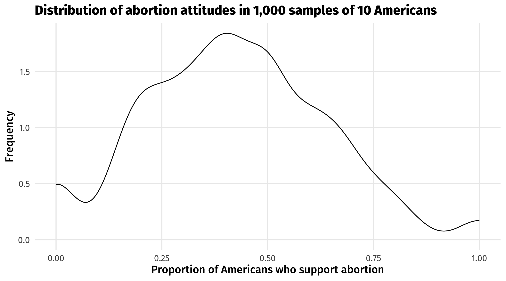

Here’s the code we’ll be using in class. Download it and store it with the rest of your materials for this course. If simply clicking doesn’t trigger download, you should right-click and select “save link as…”
# A tibble: 64,814 × 18
id year age race sex hispaniccat educ partyid relactiv abany
<dbl> <dbl> <dbl> <chr> <chr> <dbl> <dbl> <chr> <dbl> <dbl>
1 1 1972 23 White Female NA 16 Ind,Near Dem NA NA
2 2 1972 70 White Male NA 10 Not Str Demo… NA NA
3 3 1972 48 White Female NA 12 Independent NA NA
4 4 1972 27 White Female NA 17 Not Str Demo… NA NA
5 5 1972 61 White Female NA 12 Strong Democ… NA NA
6 6 1972 26 White Male NA 14 Ind,Near Dem NA NA
7 7 1972 28 White Male NA 13 Ind,Near Dem NA NA
8 8 1972 27 White Male NA 16 Ind,Near Dem NA NA
9 9 1972 21 Black Female NA 12 Strong Democ… NA NA
10 10 1972 30 Black Female NA 12 Strong Democ… NA NA
# ℹ 64,804 more rows
# ℹ 8 more variables: abdefect <dbl>, abnomore <dbl>, abhlth <dbl>,
# abpoor <dbl>, abrape <dbl>, absingle <dbl>, pid <dbl>, hispanic <dbl>
We’d like to know how the average American feels about abortion, but this is unknowable: we can’t survey everyone, there’s measurement error, etc.
Let’s pretend for a minute that we can know do this: we survey all Americans, perfectly, and they are all captured in gss_abortion. Only 64,000 Americans exist in this imaginary world.
What percent of Americans support abortion? We take the average of abany (a binary variable that equals 1 if the respondent thinks abortion should be legal for any reason):
So 41% of Americans in this imaginary world think abortion should be legal for any reason.
But what if instead of having access to the full population of Americans (gss_abortion), we only had a sample of 10 people? Let’s take 1,000 samples from gss_abortion, each of size 10, and calculate the average support for abortion in each of those samples:
ggplot(samples, aes(x = avg_abortion)) +geom_density() +labs(title ="Distribution of abortion attitudes in 1,000 samples of 10 Americans",x ="Proportion of Americans who support abortion",y ="Frequency")

We can see a lot of variation. Remember, the true population average is 41%.
We can ask other questions of these sample estimates. For example, across the 1,000 samples, what is the average sample estimate of the proportion of Americans who support abortion?
It’s 42%, which is pretty close to the population average.
What is the range of sample estimates of the proportion of Americans who support abortion? This is the difference between the largest and smallest sample average:
In this case it’s 100%, because in the smallest sample average we observed 0% support for abortion and the largest sample average we observed 100% support for abortion.